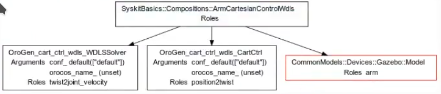

Tasks and Events
- Concepts
- Creating Tasks
- Task-level Code
- Bubbling events up - handling events in parent tasks
- Creating Functionality with Syskit Tasks
In the runtime overview as well as in this section's generalities, we have briefly brushed the subject of tasks and events. This section will (finally) detail these two concepts. The goal of this section is to provide you with tools you can use to create tasks that generate events relevant for system coordination. We will in particular:
- explain the role of events and tasks within a Syskit system.
- detail primitives that allow tasks to synthetize events that will be relevant to coordinate the system, for instance by listening to data streams generated by components.
- show how to create "pure" tasks - by opposition to components - and how they are relevant to building more complex Syskit systems.
- also, how "active" tasks can be created, that actually implement functionality in the system, and where this is a good idea vs. implementing a full blown component. We will see how to implement "ruby components" in this section, such as the ConstantGenerator from the basics tutorial.
Concepts
Profiles (for component networks) and actions (for other functionality) are the high-level tools with which you present what the system can do. In particular, the component network subsystem hides a lot of complexity, letting you work with models of the component networks you want to run.
Unfortunately, actual runtime is more complicated than that. To handle runtime, Syskit internally manages everything that it has under its control in a different data structure, called a plan.
One dimension within this plan aims at organizing the processes that are being executed within the system. Each process is represented by a task object, and task object(s) are linked together through the task structure. This provides syskit with a hierarchical view of the processes: how each process is related to the other process(es), and in particular to the system's missions.
The other dimension within this plan is temporal: the ability to track when "things" happen, but also the ability to control the system by "ordering" it to make something happen. This dimension is represented by events. Events are part of the tasks (in a way, they are "managed" or "implemented" by the tasks).
On the one hand, events are emitted to tell the system that the task achieved something. All tasks have for instance a "start" event which is emitted when the task has finished starting, or a "stop" event which is emitted when it has finished stopping. Coordination models in Syskit are essentially reacting to these emissions, an if-then subsystem that uses these event emissions as "triggers". Defining and emitting new events is therefore one of the most common tasks when coordinating behaviors.
On the other hand, some events can also be commanded. These events are said to be controlable. For instance, the system can order most tasks to start ("start" is controlable), but while a lot of tasks can be interrupted ("stop" is controlable), it cannot be made to succeed with almost certainty ("success" is thus not controlable, it is instead said to be contingent).
One important job of the task hierarchy is to provide meaning to a collection of tasks. The plan should allow to reflect why things are being executed. For instance, a robot's trajectory follower could be here for a simple point-to-point transit, but also could be used to execute a surveying pattern. Differenciating between the two feels unimportant for nominal execution - things get executed and succeed and everything is fine. It gets however important for error handling and monitoring. A good rule of thumb is that one should be able to recognize the action(s) that are being executed just by looking at the task structure. This will be the subject of a later section
Creating Tasks
Plain task models are created with syskit gen task. They are subclasses of
Roby::Task,
are defined in the App::Tasks module and are saved within the models/tasks folder.
syskit gen task task_name
The default template adds a terminates statement. This indicates that the
task can be interrupted without further action, which is a common thing for
plain tasks. Conversely, for instance, the task class that manages Rock
components - Syskit::TaskContext - will attempt to stop the component when
its stop command is called, and will wait for the component to be stopped
before its stop event is emitted. We cover how components are integrated at runtime
later in this chapter
Roby::Task and all its subclasses have five events:
- start which is always controlable
- stop, success and failed which are contingent
- internal_error which is contingent
The emission of success and failed trigger the emission of stop.
Additional contingent events (events that can only be emitted) are defined with
event :event_name
Additional controlable events (events that can be commanded) are defined with
event :event_name do |*|
# Code that will eventually emit the event
# Emit the event with ${event_name}_event.emit
end
The events themselves are instances of Roby::EventGenerator. They can be
accessed with ${event_name}_event accessors. For instance, one emits the
stop event with stop_event.emit, checks whether it has ever been emitted
with
Note that an event command does not have to emit the event. It is expected to
ensure that the event will be emitted eventually. Syskit::TaskContext for
instance calls the component's start operation but will emit the event only
when the component state change has reached the Syskit process.
Because Syskit's runtime is essentially an event loop, the commmand must not block.
Task-level Code
One objective of this chapter is to teach you
Right now we have seen how to define a task, and how to populate it with events (beyond the default ones), let's see the different ways we can implement tasks that listen to certain conditions to emit its events.
The poll block
Calling poll with a block, within a task's class definition, defines a
block that will be executed at each execution cycle (usually 100ms). The
block is evaluated in the context of the task instance (i.e. self is the
task instance). There can be only one poll block at each level of the class
hierarchy, and you must call super() to call the implementation from the
superclass.
For instance, a task that would emit stop after a configurable amount of time could be written:
class TimeoutTask < Roby::Task
terminates
argument :timeout
event :start do
# NOTE: Roby::Task#lifetime already gives the amount of
# time executed. This is done this way for illustrative reasons
@deadline = Time.now + timeout
start_event.emit
end
poll do
super()
stop_event.emit if Time.now > @deadline
end
end
Data readers
When within Syskit, one common use-case for events is to listen for a given condition in one of the component's data streams. This is usually done at a composition level, in order to keep the component itself as generic as possible.
Accessors that will allow the task to read an output port can be created
with the data_reader declarator at the class level. The argument is a port,
which - when in a composition - can be a child's port. When the child is a
data service, the actual port will be resolved transparently. For instance:
data_reader position_child.position_samples_port, as: 'system_pose'
data_reader status_port, as: 'filter_status'
Within the task, in e.g. the poll block we have just seen, a reader can
be accessed with the _reader suffix appended to the reader name, e.g.:
if (sample = system_pose_reader.read_new)
elsif (sample = filter_status_reader.read)
end
Data writers
Sometimes, passing arguments to lower level tasks through the
from(:parent_task) mechanism is simply not enough. A common occurence is to
have to convert a task argument into data sample(s) that are written to one of
the component's ports. This is done using data writers.
Port writers are created in a way that's very close to the data readers, but
using the data_writer declaration:
data_writer controller_child.cmd_port, as: 'command'
poll do
super()
cmd = generate_command
command_writer.write(cmd)
end
One has to be extremely careful when writing "only once" to ports. It is obviously necessary to make sure that the remote end is ready to read the sample, which requires to:
- make sure the task is running
- make sure the data writers is ready to send
Both tests are provided with the #ready? method. When writing periodically,
this can be safely ignored. When writing only once, make sure the writer is
ready before you write.
data_writer planning_child.problem_port, as: 'problem'
data_reader planning_child.plan_port, as: 'plan'
poll do
super()
if problem_writer.ready? && !@problem_written
problem_writer.write(problem)
@problem_written = true
end
if (plan = plan_reader.read_new)
# Do something with the plan
success_event.emit
end
end
Bubbling events up - handling events in parent tasks
When one builds a synthetic action, one has to choose what is the toplevel task that will represent that action. In profile definitions, it it the composition itself. In the action methods and action state machines that we will see momentarily, it is an instance of the toplevel task of the action.
For the purpose of coordinating that action with others - for instance within action state machines, one would want to define events on the toplevel tasks. This section will show you how this can be done, and how you can "bubble up" events from low-level tasks to handle this toplevel task.
A typical use-case for accessing a task's children is the composition: the
elements of a composition - which were added with the add statement in the
composition definition - are represented as children of the composition and are
accessible using the ${child_name}_child accessor. This is what is displayed
in the composition's visualization, for instance:

Custom event definitions
Define new events using the event statement in the composition class:
class MyComposition < Syskit::Composition
event :myevent
poll do
myevent_event.emit if lifetime > 2
end
end
Data Readers and Writers
As we have just seen, one can use a combination of data readers, data writers and poll() block to "translate" information from the children's data streams into events.
Event Forwarding
A child's event may be forwarded to a parent's event. This means that whenever the child event is emitted, the parent's event will be.
For instance, let's have a hypothetical trajectory follower component that emits
a trajectory_end event when it reaches the end, but continues running to
maintain position. For the purpose of action coordination, we would want the
composition(s) that integrate it to define the same event, and to emit this event
each time the trajectory follower component does.
This is done by adding a forwarding between the two events in the composition's
class-level instanciate method:
module Compositions
class TrajectoryFollowing < Syskit::Compositions
add OroGen.trajectory_follower.Task, as: "controller"
event :trajectory_end
def self.instanciate(*, **)
composition_task = super
composition_task.controller_child.trajectory_end_event.forward_to \
composition_task.trajectory_end_event
composition_task
end
end
end
Note that adding forwards this way is not limited to events from a parent/child. It can be done between totally unrelated events. It can also be used between events of the same task. In this latter case, it is used to categorize the events. The forwarded-to event is indeed a superset of the forward source.
For instance, the standard success and failed events are both forwarded to stop. stop is a superset of both events since it will be emitted in all the cases where success and failed are, but may be emitted in other cases as well.
Creating Functionality with Syskit Tasks
In addition to writing code in either pure ruby tasks or in compositions and
task contexts, Syskit allows you to create full functionality using Syskit
tasks. One can for instance do simple calculations, or dynamically create
simple components such as the
ConstantGenerator, which would be
rather tedious in C++.
Generally speaking, restrict yourself to simple functionality. Anything more complex than the constant generator should really be implemented as a standalone oroGen component
These tasks are subclasses of
Syskit::RubyTaskContext.
They are created with syskit gen ruby-task and live within the
Syskit::Compositions namespace and models/compositions/ folder:
syskit gen ruby-task my_task
# Created MyApp::Compositions::MyTask in models/compositions/my_task.rb
Within the ruby task context definition, input and output ports can be created:
import_types_from "base"
class MyTask < Syskit::RubyTaskContext
input_port "in", "/base/Time"
output_port "out", "/base/Time"
end
A ruby task thus created can be used the same way than any normal component. However, accessing the ports is different:
- when accessing a port of a remote component, you access the ports from the outside. This is why one uses a data writer to connect to an input (and writes to the input), and a data reader to connect to an output (and read from it)
- when accessing a port of a ruby task, the ports are accessed from the inside. One therefore does not need a separate reader/writer (we have direct access to the ports themselves), and would write to an output and read from an input:
Within a Syskit::RubyTaskContext, the component's ports are accessed through the
task's #orocos_task property. They support the common port API (#connected?,
#read and #read_new for input ports, #connected?, #write for output ports).
For instance:
import_types_from "base"
class MyTask < Syskit::RubyTaskContext
input_port "in", "/base/Time"
output_port "out", "/base/Time"
poll do
super()
while (in_time = orocos_task.in.read_new)
orocos_task.out.write(in_time + 1)
end
end
end